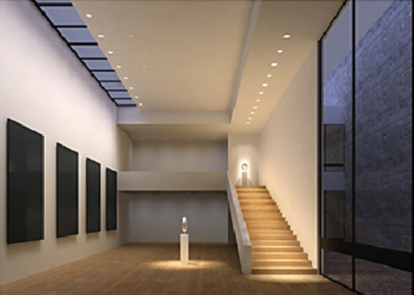

Our Approach
We bring a complete solution orientation service from across the world, by catering to the Indoor, Outdoor Technical Architectural lighting solutions as well as the Decorative lighting. This enables us to provide the entire need of a project under one roof
Perfect tones with perfect amount of light, makes places perfect to live in

Zonal lighting with delineated beams of light visually seperates one area from another
CREATING FUNCTIONAL ZONES: HIERARCHIES OF PERCEPTION
Individual lighting treatments do not provide an optimum visual comfort, how they come together and perform lets the lighting do its magic.
COMBINING INTERIORS & EXTERIORS
VERTICAL AND HORIZONTAL SPACES
This is well balanced with the Accents in the interiors
LIGHTING CREATES HEIRACHIES IN VISUAL SPACE
The directed light of the spotlights produces a rhythm on the thoroughfare and allows the tables to be islands of communication
The illuminated objects on the tables form decorative highlights in the room. The illumination outdoors reveals the depth.
Why Mr. Light
Approach